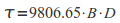

r.landscape.evol takes as input a raster digital elevation model (DEM) of surface topography and an input raster DEM of bedrock elevations, as well as several environmental variables, and computes the net change in elevation due to erosion and deposition on the hill-slopes using the USPED equation, and in the stream channels using a process equation based either on the excess stream power or shear stress.
This module uses appropriate flow on different landforms by default; however, singular flow regimes can be chosen by manipulating the cutoff points. THIS SCRIPT WILL PRODUCE MANY TEMPORARY MAPS AND REQUIRES A LOT OF FREE FILE SPACE!
The module has the ability to run recursively, looping over several iterations. The time interval represented by each iteration is determined by the scale of the input environmental variables, and as such, all input variables should be on the same time scale. The script creates a new map where each raster cell carries a numerical value, which represents the simulated meters of erosion or deposition (ED) estimated for that cell, under the specified conditions of rainfall intensity, soil erodability, water flow, and vegetation cover. This map of net ED is then added to (for deposition) or subtracted from (for erosion) the topography map of the previous time step, to create a new topography map (i.e., as a DEM) after a cycle of landuse and landscape change.
R, K, and C are environmental factors in the USPED equation that relate to the intensity of yearly rainfall, the erodability of soil, and the degree to which vegetation cover prevents erosion (See below for a detailed description of these factors). These factors largely determine the amount of erosion or deposition that occur on the hill-slopes. cutoff1, cutoff2, and cutoff3 are values of flow accumulation (amount of upslope area in square meters) that determine where surface processes change from soil-creep to laminar overland flow (sheetwash), from laminar overland flow to channelized overland flow (rills/gullies), and from channelized overland flow to full stream flow respectively. Note that some experimentation is required in order to find the best possible values for these cutoffs, and the -p flag will provide some output data that may be useful for this. kappa is the rate of diffusion for soil-creep in meters per 1000 years. sdensity is the density of the soil in grams per cubic centimeters. rain is the total annual precipitation measured in meters (or the average annual rainfall in meters per year). raindays is the total number of days on which it rained in one year (or an average value of days per year). infilt is the proportion of rainfall that infiltrates into the soil and thus does not contribute to runoff (values are between 0 and 1). Kt is the stream transport efficiency variable that describes the cohesiveness of the stream channel beds (0.001 for normal gravel/sandy/silt channel bed to 0.000001 for a bedrock channel bed). loadexp is the stream transport type variable that determines the type of stream transport modeled (1.5 for bedload transport, or 2.5 for suspended load transport). alpha is the critical slope threshold above which the model will simulate the cumulative effects of mass wasting (landsliding). These measures all need to be determined empirically for a given landscape under a given climatic condition, but the defaults are average values for the Circum-Mediterranean Basin.
By default, r.watershed is used to calculate flow accumulation modeling using the MFD algorithm included in GRASS 6.4 and higher. This can be made backwards compatible by checking the -f flag, which will use r.terraflow to compute a flow accumulation model using the SFD algorithm. This will, however, produce much less accurate results, and users are therefore encouraged to used GRASS 6.4 or higher.
The user may use the statsout option to define the name of the file that contains the statistics of erosion, deposition, and soil depths over all iterations. The default name is "mapset"_"prefix"_lsevol_stats.txt (in the users home directory).
Because physical laws that govern the flow of water across landscapes and its ability to erode, entrain, transport, and deposit sediments can be expressed in mathematical form, they can be translated into a scripting algorithm that modifies raster landscapes (i.e., in the GIS) in ways analogous to the ways in which real-world landscapes change. There are various mathematical expressions of the relevant surface processes in the geomorphological literature depending for example on the processes selected to be represented, the simplicity of representation desired, and the degree of resolution desired (Clevis, et al. 2006; Degani, et al. 1979; Mitas and Mitasova 1998; Mitasova, Hofierka, et al. 1996; Mitasova and Mitas 2001a, b; Peeters, et al. 2006; Singh and Phadke 2006; Warren, et al. 2005; Wischmeier, et al. 1971; Wischmeier and Smith 1978). We use the Unit Stream Power Erosion-Deposition (USPED) equation, derived in part from the widely-used Revised Universal Soil Loss Equation (RUSLE) (American Society of Agricultural Engineers 2003; Degani, et al. 1979; Mitasova, et al. 2001; Mitasova, Mitas, et al. 1996; Mitasova, et al. 2004; Singh and Phadke 2006; Warren, et al. 2005; Wischmeier 1976; Wischmeier, et al. 1971; Wischmeier and Smith 1978), to calculate net erosion and deposiiton across each landscape cell above the flow accumulation breakpoint cutoff3. USPED was developed for hillslopes, small watersheds, and small channels (i.e., rills and gullies) (Warren, et al. 2005), and is less applicable to larger streams and rivers. Therefore we use a different process equation to model erosion and deposition in stream channels (see below).
Net erosion and deposition rates on hillslopes are computed from the change in sediment flow across cells of a DEM that have flow accumulation values less than cutoff3. We approximate sediment flow rate from sediment transport capacity, assuming that water flowing over landscapes normally carries sediment at capacity. Transport capacity is calculated by combining a rainfall coefficient (R, MJ mm/ha h yr), soil erodability coefficient (K, Mg ha h/ha MJ mm), and coefficient for the ability of vegetation to prevent erosion (C, unitless) from RUSLE with with an estimate of topographically driven stream power as shown in equation (1)
where A is the upslope contributing area (a measure of water flowing through a cell) and B is the slope of the cell. The exponents m and n are empirically derived and vary for water flowing over nearly level ground, on hillslopes, in water catchments at the heads of gullies, or in small channels. The sediment flow rate is largely determined by the amount of water flowing (contributing area), its velocity (a function of slope), the erodability of the substrate (K factor), and the ability of the vegetation cover to prevent erosion (C factor).
Implementing the USPED algorithm in a GRASS script combines GIS modules for calculating slope, aspect, and flow accumulation (the amount of water that flows across each cell) using map algebra. Data used by the script includes a map of initial surface topography (a raster DEM), soil erodability (a constant for uniform soil or a raster map for variable soil), vegetation cover (a constant or raster map), and rainfall intensity (a constant only). We also create an underlying bedrock topography map (a raster DEM) to limit the total depth of unconsolidated sediment that can be eroded. Soil erodability, vegetation cover, and rainfall are expressed as the K-factor (K), C-factor (C), and R-factor (R) components of the RUSLE and have been calculated empirically for a variety of setting (Boellstorff and Benito 2005; MartÃnez-Casasnovas, 2000; Essa 2004; Hammad, et al. 2004; Renard, et al. 1997; Renard and Freimund 1994).
For areas of the DEM that have flow accumulation values greater than cutoff3 (ie. areas that are proper streams), we use a case of the transport limited process law that is formulated for water flowing in stream channels (Howard 1980; Tucker and Hancock 2010). This is done by first calculating the reach average shear stress (τ), here estimated for a cellular landscape simply as:

Where: 9806.65 is a constant related to the gravitational acceleration of water, B is the slope of the cell in degrees, and D is the instantaneous depth of flowing water in the cell. D is here assumed to be roughly equivalent to the depth of flow during the average minute of rainfall, calculated by:
Where: Rm is the total annual precipitation in meters, i is the proportion of rainfall that infiltrates rather than runs off, A is the uplsope accumulated area per unit contour width at the cell, Rd is the number of days on which it rained in a one year period, and 1440 is a constant relating to the number of minutes in a day.
Then the transport capacity is calculated by:
Where: Kt is the transport efficiency factor related to the character of the stream bed (0.001 for normal sediment to 0.000001 for bedrock), and n is an empirically determined exponent related to the dominant type of transport in the stream system (1.5 for bedload transport or 2.5 suspended load transport).
Net erosion and deposition rates are then computed across the entire DEM as change in sediment flow in the x and y directions across a cell as follows:
where ED is net erosion or deposition rate for sediment and α is the topographic aspect (i.e., direction of slope) for a cell. Whether flowing water will erode or deposit sediment in a particular cell is determined by the change in sediment flow (transport capacity) from one cell to the next. If the transport capacity increases (for example, due to an increase in the steepness of the slope or amount of flowing water), more sediment will be entrained and erosion will occur; if the transport capacity decreases (for example, due to a decrease in slope or water flow) sediment will be deposited.
The output of this GRASS implementation of these transport equations must be modified in several ways in order to make it appropriate for landscape evolution simulation. First, because of the way slope is calculated in r.slope.aspect, the flux T is actually calculated one cell downslope from where is really occurs. This causes problems when USPED is iterated over many cycles, and creates oscillating "spikes" in positive and negative flux values resulting in the calculation of alternating deep pits and high mounds at sensitive areas on the landscape. To overcome this, r.landscape.evol uses a neighborhood algorithm in r.mapcalc to put the calculated value of T back into the cell that is most uplsope from where it is originally calculated.
Additionally, control must be kept for the amount of erodible sediment available to moved. r.landscape.evol explicitly tracks this by taking the difference between the input bedrock elevation DEM, and the current surface topography DEM, and creating a map of "soil" depth. This map tracks the amount of material assumed to be available for entrainment and transport by surface processes. A simple logical algorithm is used to prevent unduly large amounts of erosion from being calculated in areas devoid of erodible materials (ie. at bedrock outcrops). Where this condition occurs, K or Kt is made to be very small, resulting in only extremely small amounts of erosion.
Another major issue is that the total flux T is in units of Tons/Ha, which means it must be converted in order to calculate the change in elevation at each cell (mvert). This is done via a simple algorithm that uses the density of the soil and the cell resolution:
Where: 10000 is the number of meters per hectare, Sd is the density of the soil, and Res is the cell resolution (width). In order to convert the output back to Tons/Ha (standard rate for USPED/RUSLE equations), you can multiply the netchange output map by "(10000 x raster cell resolution x sdensity)" to create a map of soil erosion/deposition rates across the landscape.
To get started with r.landscape.evol, you need to determine the appropriate values for cutoff1, cutoff2, and cutoff3, which are transition points between different types of erosive processes. These are in units of flow accumulation scaled to actual surface flow as determined in r.watershed from the values of rainfall and flow hindrance from vegetation. To do this, you should parameterize the module as best as possible, EXCEPT for the three "cutoffs". Then, run the module with the -p flag, which will make a random points vector file with the values of scaled flow accumulation (scaled to actual rainfall and vegetation), profile curvature, and tangential curvature in the associated table. Plotting the log of the scaled flow accumulation against each of these two curvatures will help you to determine reasonable values for the cutoffs, as each transition should show a unique relationship between curvature and flow accumulations. See the figures below for examples:
r.landscape.evol accepts an external "climate file", which should be a comma separated plain text file with four columns in the order of, "rain,R,storms,stormlength" (without headers). Each of these columns must exist, although there need not be values in every column (i.e., you can enter a single value for any of these parameters in the command line, and combine that with populated columns for the other values). Note that the climate file must have the same number of rows as there are iterations of the simulation (years).
The MEDLAND project at Arizona State University
Mitasova, H., C. M. Barton, I. I. Ullah, J. Hofierka, and R. S. Harmon 2013 GIS-based soil erosion modeling. In Remote Sensing and GIScience in Geomorphology, edited by J. Shroder and M. P. Bishop. 3:228-258. San Diego: Academic Press.
American Society of Agricultural Engineers 2003 Honoring the Universal Soil Loss Equation: Historic Landmark Dedication Pamphlet. Purdue University Department of Agricultural and Biological Engineering.
Clevis, Q., G. E. Tucker, G. Lock, S. T. Lancaster, N. Gasparini, A. Desitter and R. L. Bras 2006 Geoarchaeological simulation of meandering river deposits and settlement distributions: A three-dimensional approach. Geoarchaeology 21(8):843-874.
Degani, A., L. A. Lewis and B. B. Downing 1979 Interactive Computer Simulation of the Spatial Process of Soil Erosion. Professional Geographer 31(2):184-190.
Howard, A. D. 1980. Thresholds in river regimes. Thresholds in geomorphology, 227-258.
Mitas, L. and H. Mitasova 1998 Distributed soil erosion simulation for effective erosion prevention. Water Resources Research 34(3):505-516.
Mitasova, H., J. Hofierka, M. Zlocha and L. R. Iverson 1996 Modelling topographic potential for erosion and deposition using GIS. International Journal of Geographical Information Systems 10(5):629-641.
Mitasova, H. and L. Mitas 2001a Modeling Physical Systems. In Geographic Information Systems and Environmental Modeling, edited by B. O. Parks, M. Crane and K. C. Clarke, pp. 189-210. Prentice Hall, New York. 2001b Multiscale soil erosion simulations for land use management. In Landscape erosion and landscape evolution modeling, edited by R. Harmon and W. Doe, pp. 321-347. Kluwer Academic/Plenum Publishers, New York.
Mitasova, H., L. Mitas and W. M. Brown 2001 Multiscale simulation of land use impact on soil erosion and deposition patterns. In Sustaining the Global Farm. Selected Papers from the 10th International Soil Conservation Organization Meeting, May 1999, Purdue University, edited by D. E. Stott, R. H. Mohtar and G. C. Steinhardt, pp. 1163-1169. USDA-ARS National Soil Erosion Research Laboratory, Purdue.
Mitasova, H., L. Mitas, W. M. Brown and D. Johnston 1996 Multidimensional Soil Erosion/Deposition Modeling Part III: Process based erosion simulation. Geographic Modeling and Systems Laboratory, University of Illinois at Urban-Champaign.
Mitasova, H., C. Thaxton, J. Hofierka, R. McLaughlin, A. Moore and M. L 2004 Path sampling method for modeling overland water flow, sediment transport and short term terrain evolution in Open Source GIS. In Proceedings of the XVth International Conference on Computational Methods in Water Resources (CMWR XV), edited by C. T. Miller, M. W. Farthing, V. G. Gray and G. F. Pinder, pp. 1479-1490. Elsevier, Chapel Hill, NC, USA.
Peeters, I., T. Rommens, G. Verstraeten, G. Govers, A. Van Rompaey, J. Poesen and K. Van Oost 2006 Reconstructing ancient topography through erosion modelling. Geomorphology 78(3-4):250-264.
Rawls, W. J. 1983 Estimating soil bulk denisty from particle size analysis and organic matter content. Soil Science 135(2):123.
Renard, K. G., G. R. Foster, G. A. Weesies, D. K. McCool and D. C. Yoder 1997 Predicting soil erosion by water: a guide to conservation planning with the Revised Universal Soil Loss Equation (RUSLE). In Agriculture Handbook, pp. 1-51. vol. 703. US Department of Agriculture, Washington, DC.
Renard, K. G. and J. R. Freimund 1994 Using monthly precipitation data to estimate the R-factor in the revised USLE. Journal of Hydrology 157(1-4):287-306.
Singh, R. and V. S. Phadke 2006 Assessing soil loss by water erosion in Jamni River Basin, Bundelkhand region, India, adopting universal soil loss equation using GIS. Current Science 90(10):1431-1435.
Tucker, G. E. and G. R Hancock 2010 Modelling landscape evolution. Earth Surface Processes and Landforms 35(1): 28-50.
Warren, S. D., H. Mitasova, M. G. Hohmann, S. Landsberger, F. Y. Iskander, T. S. Ruzycki and G. M. Senseman 2005 Validation of a 3-D enhancement of the Universal Soil Loss Equation for prediction of soil erosion and sediment deposition. Catena 64:281-296.
Wischmeier, W. H. 1976 Use and Misuse of the Universal Soil Loss Equation. Journal of Soil and Water Conservation 31:5-9.
Wischmeier, W. H., C. B. Johnson and B. V. Cross 1971 A Soil Erodibility Nomograph for Farmland and Construction Sites. Journal of Soil and Water Conservation 26:189-92.
Wischmeier, W. H. and D. D. Smith 1978 Predicting Rainfall-Erosion Losses - A Guide to Conservation Planning. USDA Agriculture Handbook 282.